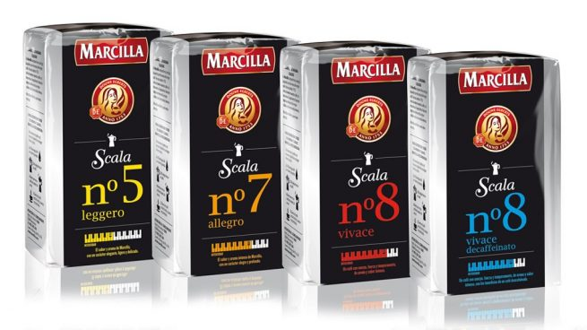

Saimaza
Una de las marcas de café con origen español por excelencia. Inició sus andaduras en el 1908 en el corazón de Sevilla, de la mano del señor Joaquín Sainz de la Maza.
En 1983, fue comprada por Kraft Food, y aunque les costó algunos meses adaptación, pronto empezaron a sacar provecho de los beneficios que se obtiene al pertenecer a una empresa internacional de las dimensiones de Kraft.
Los tipos de café que ofrece Saimaza se pueden dividir en dos grandes grupos, los que vienen servidos en cápsula y los que vienen molidos.